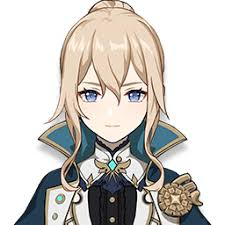
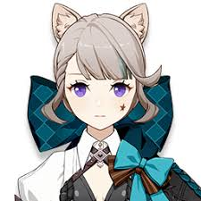

Jean is the Acting Grand Master of the Knights of Favonius. She is always busy handling unrest across Mondstadt and tirelessly working to maintain the City of Freedom.
She is a renowned professor of the Sumeru Akademiya and member of the Haravatat Darshan. She recently returned to the Akademiya after solving a puzzle and escaping the ruins that trapped her a century ago.

Quiet and reserved, Lynette functions as a magician's assistant to her brother Lyney. After their parents' death and having been saved from an abusive noble by their "Father," Lynette has also served as "eyes" and "ears" for the House of the Hearth.
A ninja from the Shuumatsuban that is struggling with growing tall. Sayu believes that sleeping can help her growth, which is why she prefers to use her ninja techniques to hide and "laze around."